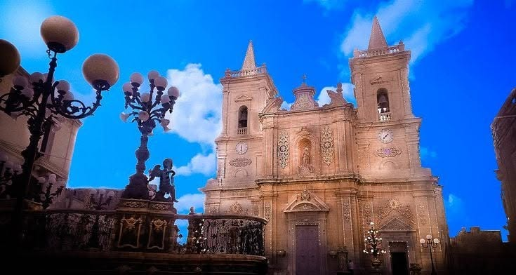
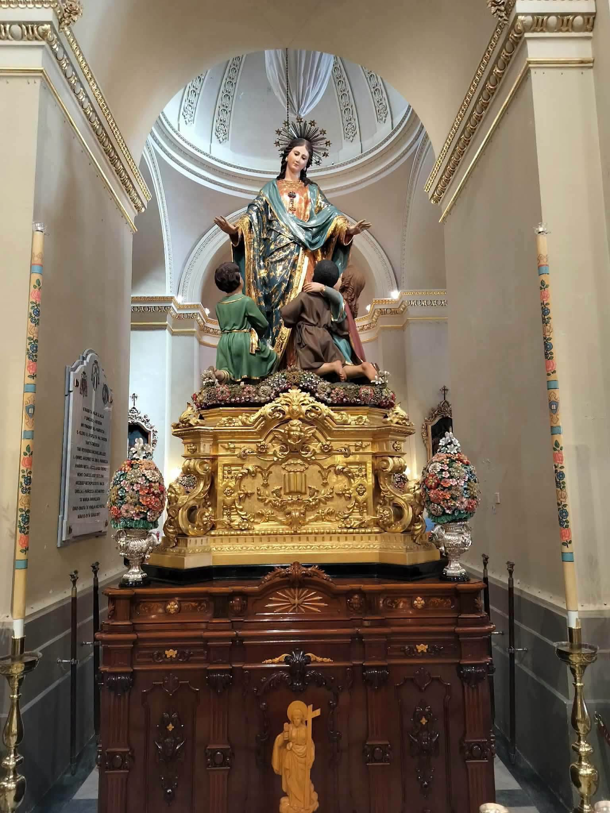
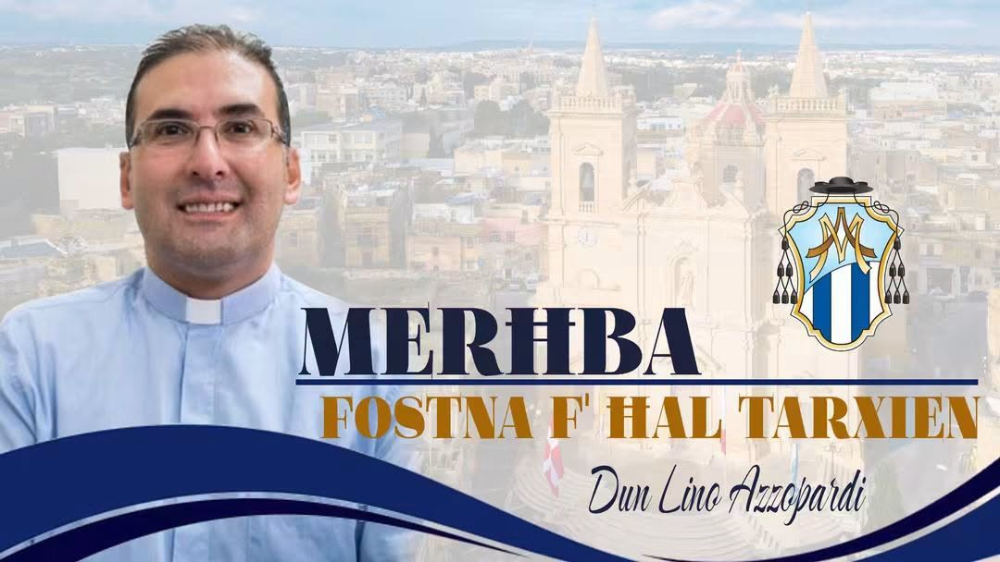

ĦAL TARXIEN · MALTA
Our village.
Our faith. Our memories.
A community home for Marija Annunzjata, the heritage of Ħal Tarxien and the people who keep its traditions alive.
START EXPLORING
Faith and village heritage
Read the stories, meet the parish team, and discover the works treasured by our community.

HISTORY & DIRECTIONS
Our Church and Its History
Follow the parish and church through the centuries, with a timeline and historical sources.
Read the story →
DEVOTION & ART
Madonna tad-Duttrina
Discover the devotion, the statue’s maker, its meaning and its restoration history.
Explore the devotion →
OUR PARISH
Meet the Parish Team
Meet the priests serving Ħal Tarxien, with dated and sourced information.
Meet the team →